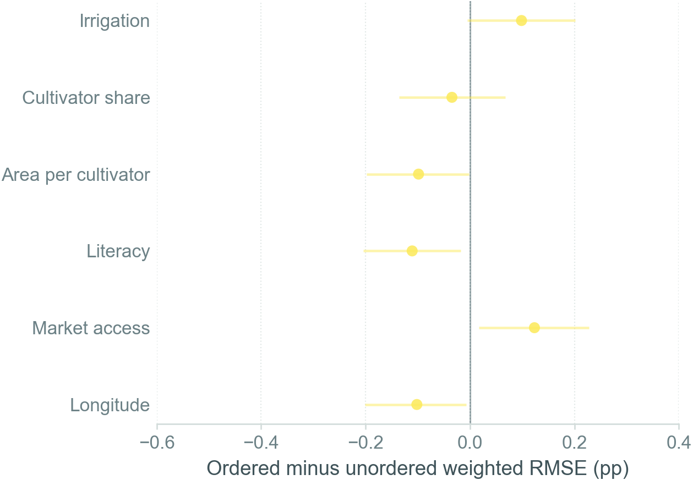
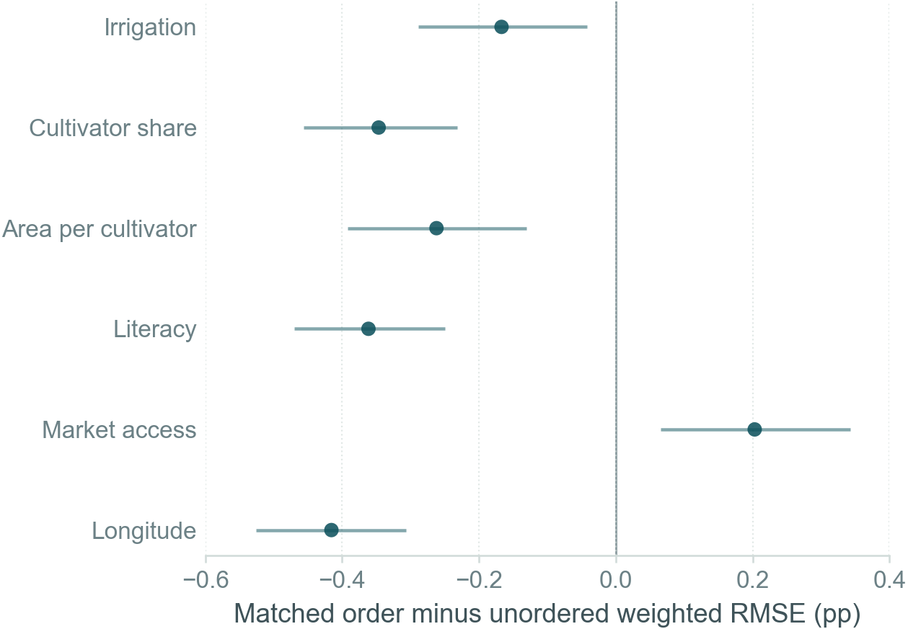
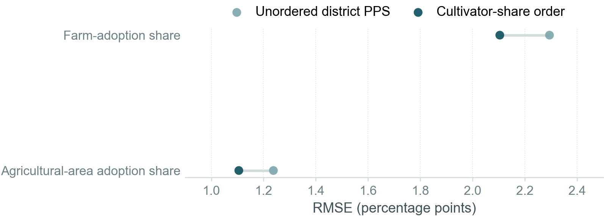
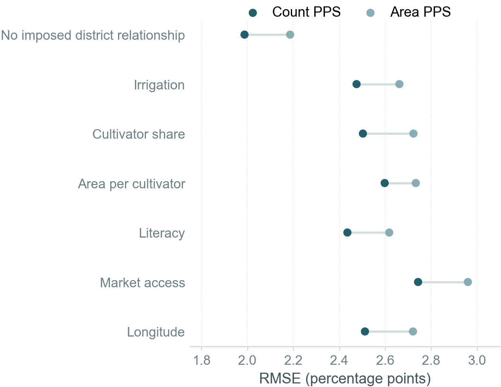
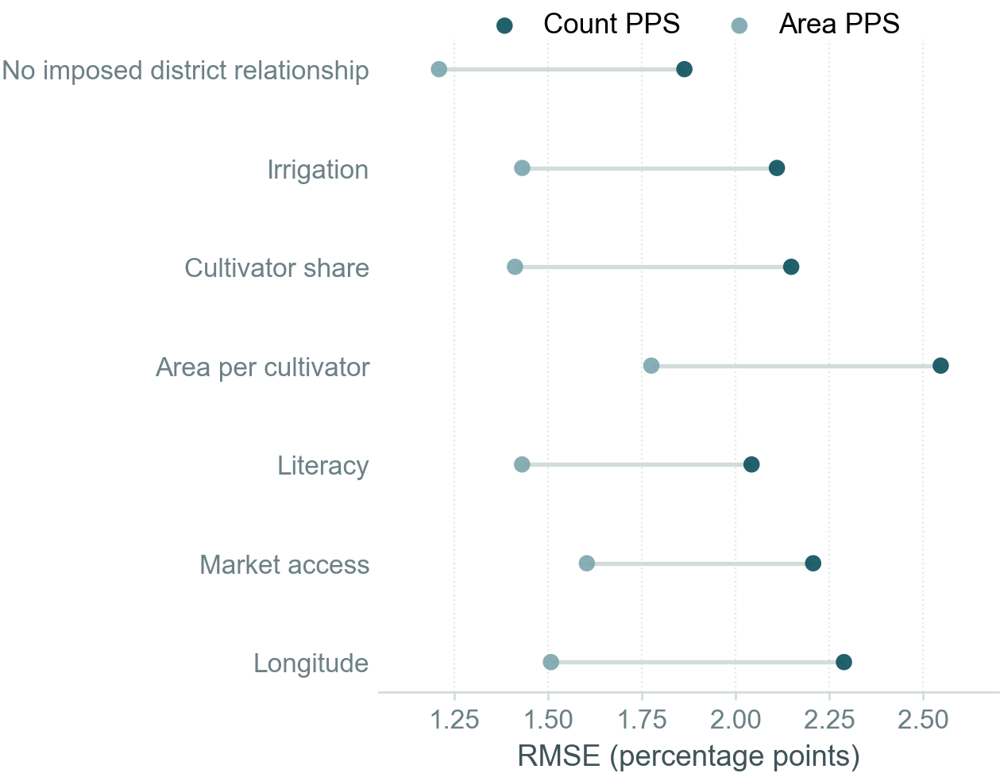
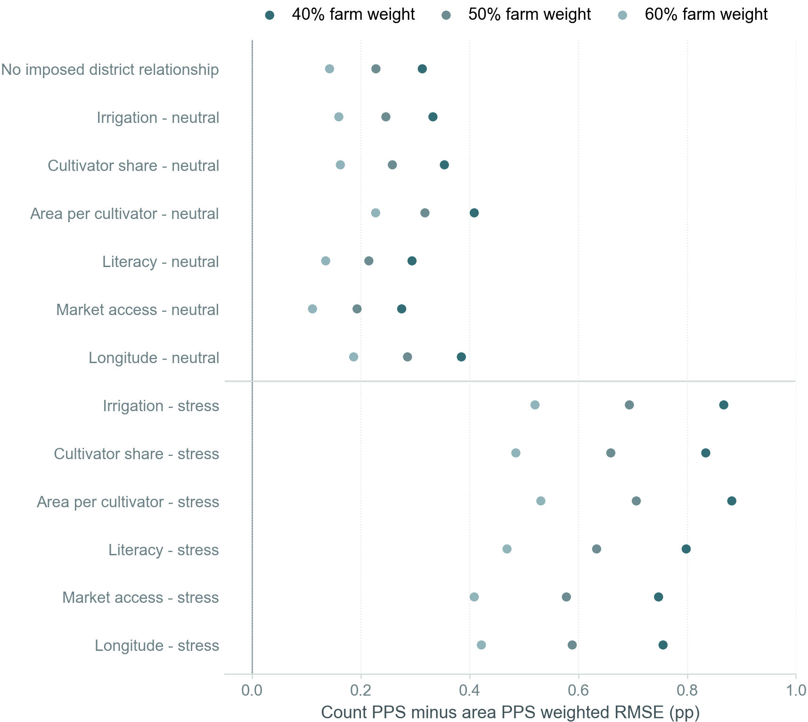
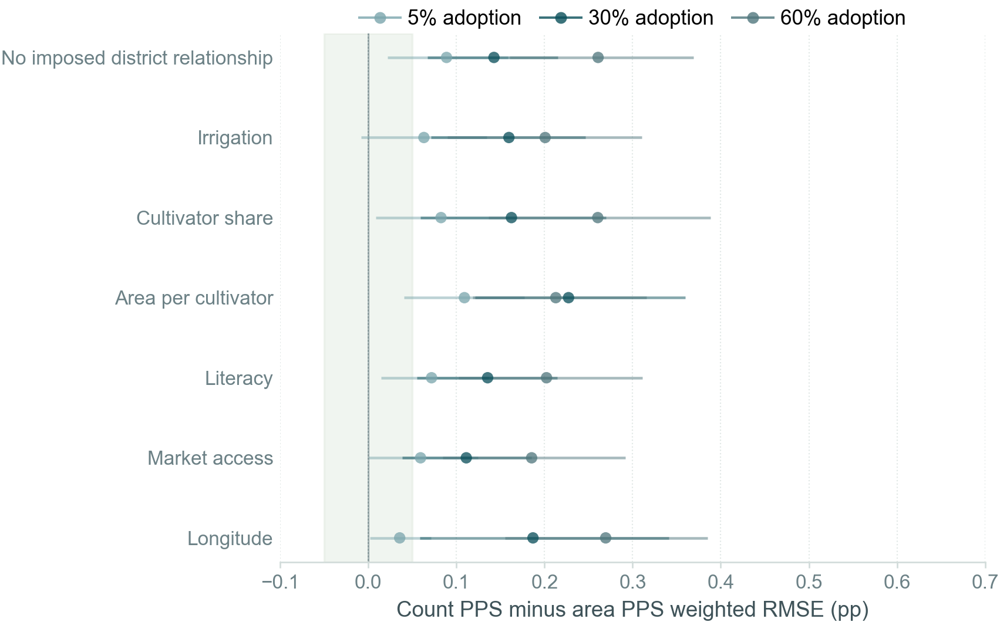
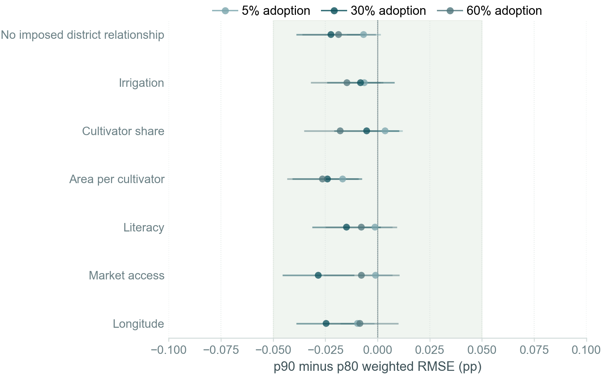
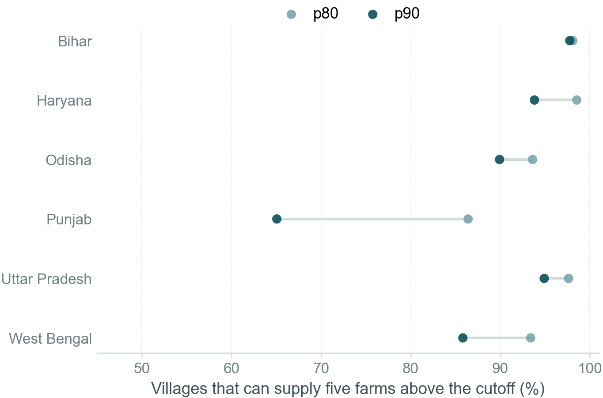
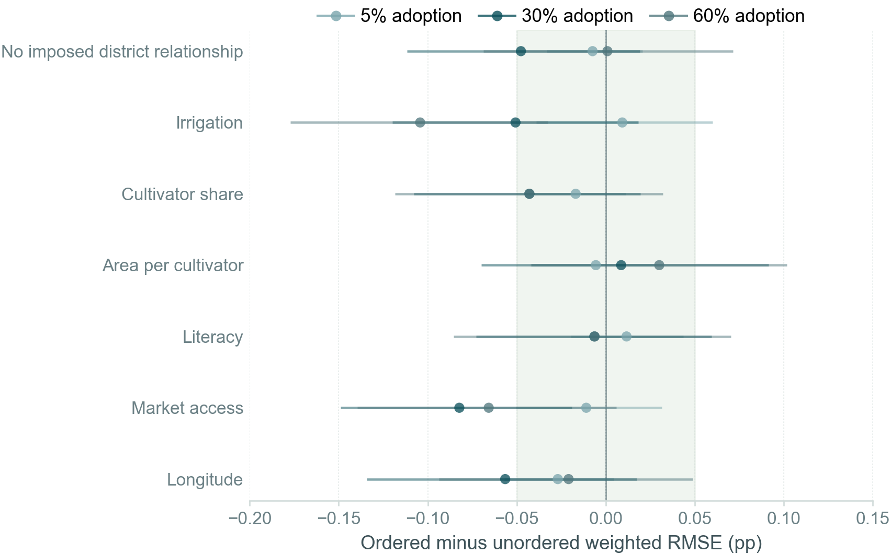

Ultimately, we want to use one sample to estimate both the farm-adoption share and the agricultural-area adoption share. We simulate the complete sampling process, from selecting districts and villages to selecting farms, while varying the sampling choices at all three stages.
Count-based probability-proportional-to-size (PPS) sampling uses farm counts as the measure of size. Area-based PPS uses net sown area.
Both methods produce small errors. Across seven scenarios with 30 percent farm adoption, no farm-size or observed village predictor, and limited within-village clustering, root mean squared error (RMSE) for estimates pooled across the six study states remains below 3 percentage points.
Relative to area-based village PPS, count-based village PPS lowers farm-adoption RMSE by 0.14 to 0.22 percentage points.
Relative to count-based village PPS, area-based village PPS lowers agricultural-area adoption RMSE by 0.60 to 0.78 percentage points.
One sampling design needs to serve two adoption measures
These two measures, the farm-adoption share and the agricultural-area adoption share, answer different policy questions. A design that represents farm households efficiently may not represent agricultural area equally well.
Farm-adoption share
How widely has the innovation spread across farms?
The numerator counts farm households that use an innovation. Each farm household contributes once, regardless of farm size.
\[
P_F = \frac{\sum_{i=1}^{N} A_i}{N}
\]
Here, \(A_i\) equals one when farm \(i\) adopts, and \(N\) is the number of farms.
Agricultural-area adoption share
How much agricultural area uses the innovation?
The numerator measures land under an innovation. An adopting farm may use the innovation on only part of its agricultural area.
Here, \(a_i\) is farm \(i\)'s agricultural area, and \(u_i\) is the share of that area under the innovation.
The farm-adoption and agricultural-area adoption equations define population shares. We estimate both shares from the sample using inverse-probability survey weights, as explained in Section 4.
2
2. Sampling choices included
We run a compound experiment across all three sampling stages
Compound here means that each simulated design combines one method for selecting districts, one method for selecting villages, and one farm-size cutoff within villages.
A measure of size determines how PPS inclusion probabilities vary across units. We use the same district measure of size throughout and compare two village measures of size.
Sampling feature
What we hold fixed or compare
District measure of size
Use average relevant-crop area from the Directorate of Economics and Statistics (DES) for 2022-23 through 2024-25 in every district design
District selection method
Select 50 distinct districts directly using the inclusion probabilities implied by relevant-crop area, or order the district frame by one of six candidate variables before systematic PPS
Village measure of size
Use either farm counts or net sown area to determine village inclusion probabilities
Village selection method
Select 10 distinct villages directly using village inclusion probabilities, or order the village frame by one candidate variable at a time before systematic PPS
Farm-size cutoff
Compare state-specific p70, p80, and p90 thresholds while assigning 5 of 15 interviews above the cutoff
Direct PPS selects distinct units using unit inclusion probabilities without first ordering a sampling frame. Systematic PPS orders units, chooses one random start, and selects at regular intervals along the cumulative measure of size.
Relevant-crop area excludes clearly irrelevant crops such as sugarcane. Each replication selects 50 districts and 10 villages per district. A selected village contributes 15 farms when its frame contains at least 15 farms. Smaller villages contribute every available farm. Under area-based PPS with a p80 cutoff, about 1 to 8 percent of selected villages across states contain fewer than 15 farms.
At a 30 percent farm-adoption rate, we compare 13 adoption scenarios, 7 district selection methods, and 19 combinations of village measure of size, village selection method, and farm-size cutoff. Additional simulations repeat the top five sampling designs at 5 and 60 percent farm adoption.
3
3. How adoption varies
We vary district relationships separately from village and farm-size relationships
Evaluating a candidate ordering variable requires an assumption about how adoption relates to that variable. Each scenario states that assumption explicitly.
We add a shared unobserved village component to every farm's adoption propensity. The intraclass correlation coefficient (ICC) measures the share of unobserved variation attributable to the common village component. The latent ICC is the underlying simulation ICC in the continuous adoption variable, before we convert it into a yes-or-no adoption outcome.
Scenario group
Relationship with adoption
Within-village clustering
No observed predictor 1 scenario
No observed district, village, or farm-size characteristic predicts adoption
Latent ICC 0.03
One district predictor 6 scenarios
One candidate district characteristic predicts adoption. Farm size and observed village characteristics do not
Latent ICC 0.03
District, village, and farm-size predictors 6 scenarios
One candidate characteristic predicts adoption at both district and village levels. Adoption also rises with farm size
Latent ICC 0.15
Six candidate characteristics are irrigation, cultivator share, agricultural area per cultivator, literacy, agricultural market access, and longitude. For an adoption probability \(p\), log odds equal \(\log[p/(1-p)]\). The log-odds scale keeps predicted probabilities between zero and one.
When a candidate characteristic predicts adoption, a one-standard-deviation increase in that characteristic raises log odds by 0.7. At a 30 percent starting probability, the increase raises predicted adoption to about 46 percent when other terms stay fixed.
We also add an unobserved district component to adoption propensity with a coefficient of 0.7. The unobserved component creates district variation that no candidate ordering can directly balance. We then calibrate farm-level probabilities so their average equals the simulated adoption rate for that district.
For adopters, we draw the share of agricultural area under the innovation from a beta distribution with mean 55 percent and concentration 6. A concentration parameter of 6 controls how widely farm-specific use shares vary around the mean. We set both values as simulation assumptions.
4
4. How each simulation runs
Every comparison uses the complete two-stage sample and the survey estimator
The simulation fixes one synthetic population, repeatedly draws the complete sample, and compares each estimate with the known population share.
Build synthetic farms in every village of all 203 positive-support districts
Assign adoption using one of the 13 stated conditions
Select 50 districts within state-by-zone strata
Select 10 villages in each sampled district
Select 15 farms per village, or every available farm when fewer than 15 are listed
Estimate both adoption shares and repeat the process 1,000 times
The estimator pools farms across districts before taking each ratio
The weight \(w_i\) is the inverse of farm \(i\)'s inclusion probability. Pooling the estimated numerators and denominators across all sampled districts matches how the survey will compute its estimates.
Lower RMSE is better. Every result below reports RMSE or an RMSE difference in percentage points. Horizontal bars show paired 95 percent Monte Carlo intervals.
5
5. How we compare designs
The decision rule combines two precision goals
The rule first removes clearly inferior designs, then compares the survivors under several weights on farm-adoption precision. The coefficient of variation (CV) divides RMSE by the true simulated adoption share.
Remove a design if another design improves both adoption measures in the same condition
Use provisional CV targets of 5 percent for the six-state estimates and 15 percent for each state as guardrails
Compare weighted RMSE with 40, 50, and 60 percent weight on farm adoption
Require an improvement of at least 0.05 percentage points with paired uncertainty before treating a small difference as consequential
Check adoption rates of 5 and 60 percent and a moderate district gradient of 0.35
The main comparison uses \(w=0.60\). Weights of 0.40 and 0.50 show whether a conclusion depends on placing slightly more or less weight on farm-adoption precision. No complete design meets every provisional CV target in every neutral condition, so the guardrails identify weak cells rather than select a design by themselves.
6
6. District ordering
District ordering helps when its adoption gradient is real
The full design varies district ordering together with village PPS, the farm-size cutoff, and village ordering.
Move left: the ordered district design has lower weighted RMSE
Move right: drawing districts without an observed ordering variable has lower weighted RMSE
Yellow marks the condition with no imposed observed relationship

No observed district characteristic predicts adoptionArea PPS, p90, and the area-per-cultivator village order are fixedSmall gains and losses appear even when no candidate is a true predictor

Each ordering variable predicts adoption in turnThe ordering variable matches the active district relationshipFive matched orders help, while market-access ordering does not
With the stronger 0.7 relationship, the matched ordering lowers weighted RMSE for irrigation, cultivator share, area per cultivator, literacy, and longitude. The gain ranges from 0.17 to 0.42 percentage points. Market-access ordering raises weighted RMSE by 0.20 points even when market access predicts adoption.
Across all neutral conditions and all village-stage arms, every systematic district order either has a clear loss in some cells or falls more than 0.10 points behind the best order in some cells. The rule therefore keeps the direct unordered district PPS draw as the baseline choice.
A district gradient describes how strongly farm adoption varies with an observed district characteristic. A 0.35 cultivator-share gradient means that a one-standard-deviation increase in cultivator share raises adoption log odds by 0.35.
A moderate cultivator-share gradient favors ordering
Starting from 30 percent adoption, the 0.35 gradient raises the predicted probability to about 38 percent, holding the unobserved component fixed.

Cultivator-share ordering under the 0.35 district gradientThe village design stays fixed at area PPS, p90, and area-per-cultivator orderingOrdering lowers farm RMSE by 0.19 points and agricultural-area RMSE by 0.13 points
The paired weighted-loss improvement is 0.16 to 0.17 percentage points across the three decision weights, and every paired interval excludes zero. District ordering is therefore a substantive assumption choice: cultivator-share ordering helps if that district gradient is credible, while the unordered draw is safer when no candidate relationship is imposed.
7
7. Village PPS
Village PPS creates a small, consistent precision trade-off
Count-based village PPS is more precise for the farm-adoption share. Area-based village PPS is more precise for the agricultural-area adoption share.
Dark teal represents count-based village PPS
Light teal represents area-based village PPS
Each row holds the district method, p90 cutoff, and 5 of 15 allocation fixed

Farm-adoption precisionAbsolute RMSE in each neutral 30 percent adoption conditionCount PPS lowers RMSE by 0.14 to 0.22 percentage points

Agricultural-area adoption precisionAbsolute RMSE in each neutral 30 percent adoption conditionArea PPS lowers RMSE by 0.60 to 0.78 percentage points
Farm-adoption RMSE ranges from 1.99 to 2.74 points under count PPS and from 2.19 to 2.96 points under area PPS. Agricultural-area adoption RMSE ranges from 1.21 to 1.78 points under area PPS and from 1.86 to 2.55 points under count PPS. Both designs therefore keep six-state RMSE below 3 percentage points in the neutral conditions.
Positive values mean area PPS has lower weighted RMSE
Neutral conditions isolate district relationships
Stress conditions also add farm-size and village relationships with stronger clustering

PPS comparison across all compound conditionsp90 and 5 of 15 interviews above the cutoff are fixedArea PPS has lower weighted RMSE at 40, 50, and 60 percent farm weight in every condition
The area-PPS advantage is smallest at 5 percent adoption
Positive values mean area PPS has lower weighted RMSE
The shaded band marks differences smaller than 0.05 percentage points
Circles are paired estimates and horizontal lines are 95 percent Monte Carlo intervals

PPS sensitivity to the adoption rateThe decision gives 60 percent weight to farm-adoption precisionArea PPS has lower point loss in every neutral condition at all three adoption rates
At 5 percent adoption, the area-PPS advantage is 0.04 to 0.11 percentage points. Five of seven neutral conditions clear the 0.05-point decision rule with paired uncertainty. At 60 percent adoption, the advantage grows to 0.19 to 0.27 points and all seven conditions clear the rule.
The PPS choice is a real trade-off, but the absolute differences are small. Under 40/60, 50/50, or 60/40 weights, the compound evidence supports area-based village PPS.
8
8. Farm-size cutoff
Precision does not distinguish p80 from p90 sharply
The cutoff comparison fixes area-based village PPS and allocates 5 of 15 interviews above the state-specific threshold.
Negative values mean p90 has lower weighted RMSE
The shaded band marks differences smaller than 0.05 percentage points
Each row shows one neutral district relationship

p90 compared with p80 under area PPSThe decision gives 60 percent weight to farm-adoption precisionEvery point difference is smaller than 0.05 percentage points
At 30 percent adoption, p90 lowers weighted RMSE by 0.01 to 0.03 points across the seven neutral conditions. At 5 percent adoption, the differences range from a p80 advantage below 0.01 points to a p90 advantage of 0.02 points. At 60 percent adoption, p90 lowers weighted RMSE by 0.01 to 0.03 points. Every difference is too small to choose the cutoff on precision alone.
p80 is easier for villages to supply
If a village has fewer than five farms above the cutoff, the design moves the remaining interviews below the cutoff. The sample still targets 15 interviews, but the planned larger-farm allocation becomes weaker.

Availability of five farms above each cutoffShares are weighted by area-PPS village selection probabilitiesp80 improves availability in every state, with the largest difference in Punjab
Under area PPS, 86 to 99 percent of selected villages can supply five farms above p80. The range is 65 to 98 percent above p90. Punjab has the largest difference: 86 percent at p80 compared with 65 percent at p90.
Because the precision differences are small, p80's greater ability to supply five farms above the cutoff is the stronger argument for the operational choice.
9
9. Village ordering
Village ordering does not produce a stable improvement
In the 30 percent compound screen, agricultural area per cultivator has the lowest loss among the qualified area-PPS village orderings. The adoption-rate sensitivities compare this ordering with drawing villages directly from their PPS probabilities.
Negative values mean area-per-cultivator ordering has lower weighted RMSE
The shaded band marks differences smaller than 0.05 percentage points
Area PPS, p90, and 60 percent farm weight are fixed

Area-per-cultivator village orderingEach row is one neutral district relationshipPoint estimates and intervals vary across relationships and adoption rates
At 30 percent adoption, area-per-cultivator ordering lowers point loss in six of seven neutral conditions. At 5 percent adoption, no comparison clears the 0.05-point rule with paired uncertainty. At 60 percent adoption, the irrigation condition clears the rule, while the other six conditions do not. The direction remains mixed across adoption rates and district relationships.
The compound evidence does not cleanly justify committing to one village ordering variable. Drawing villages directly from their PPS probabilities remains the simpler default.
10
10. Overall conclusion
Five designs isolate the choices that matter
The adoption-rate sensitivities compare one feature-assembled design, three direct feature comparisons, and one simple-random-sample benchmark.
All five designs draw districts directly from their PPS probabilities. The separate 0.35-gradient sensitivity compares cultivator-share district ordering with the direct district draw while holding the primary village design fixed.
Design
Why it is included
Area PPS, p90, villages ordered by area per cultivator
Feature-assembled design from the 30 percent screen
Count PPS, p90, villages drawn without an observed order
Direct PPS comparison
Area PPS, p80, villages drawn without an observed order
Cutoff comparison
Area PPS, p90, villages drawn without an observed order
Village-order comparison
Simple random sample of 150 farms within each sampled district
Diagnostic precision benchmark
Synthesis
Area-based village PPS has lower combined loss under farm weights from 40 to 60 percent
p80 and p90 are practically tied on precision
p80 makes the 5 of 15 allocation easier to implement
No village ordering variable has a stable advantage
Cultivator-share district ordering helps when a district adoption gradient is imposed
The village-stage evidence therefore points to area-based PPS with a p80 cutoff, 5 of 15 interviews allocated above the cutoff, and villages drawn without sorting on an observed characteristic. The district-stage choice depends on whether the team considers a positive cultivator-share adoption gradient plausible enough to design around.
11
11. Technical appendix
Definitions and construction details
Each subsection is collapsed by default. A link to a subsection opens it automatically.
How I define the district frame
The study frame excludes five West Bengal districts in the Eastern Himalayan Region: Alipurduar, Darjeeling, Jalpaiguri, Kalimpong, and Cooch Behar. Kolkata has no rural villages in the sampling frame. The compound experiment therefore uses 203 positive-support districts.
Purulia remains in the main frame. It is the only district in the West Bengal Eastern Plateau and Hills stratum and therefore enters the 50-district sample with certainty.
How I define the candidate ordering variables
Irrigation share
Irrigated area divided by irrigated plus unirrigated area
Cultivator share
Main and marginal cultivators divided by cultivators plus agricultural laborers
Agricultural area per cultivator
Net sown area divided by main and marginal cultivators
Literacy rate
Literate population divided by population age seven and above
Agricultural market access
Equal-weight mean of four village indicators: a market, weekly haat, agricultural marketing society, and agricultural credit society
Longitude
Longitude of the village centroid
Village ordering uses the village-level value. District ordering aggregates the same information across villages in the district.
How I standardize the candidate variables and generate adoption
For district adoption, I subtract each state-by-zone stratum's unweighted mean and divide by its unweighted standard deviation. For village adoption, I apply the same calculation across villages within a district. A standardized value of one is therefore one standard deviation above the relevant mean.
We write district \(d\)'s target farm-adoption probability in stratum \(h\) under candidate \(k\) as \(q_{dhk}\). The intercept \(\alpha_{hk}\) sets the cultivator-weighted mean adoption rate in the stratum. The standardized candidate value is \(z_{dhk}\). The standardized unobserved district component is \(u_{dh}\). The main compound screen sets \(\beta_D\) to 0.7 when candidate \(k\) is active and to zero in the no-relationship condition.
We write farm \(i\)'s adoption probability in village \(v\) and district \(d\) as \(p_{ivd}\). The district intercept \(a_d\) makes the mean farm probability equal \(q_{dhk}\). Standardized log farm area is \(f_{ivd}\). The standardized active village candidate is \(z_{vd}\). The village component is \(b_{vd}\). Neutral conditions set \(\beta_F=\beta_V=0\) and use latent ICC 0.03. Stress conditions set \(\beta_F=\beta_V=0.7\) and use latent ICC 0.15.
How I interpolate the state farm-size percentiles
The 2015-16 Agriculture Census reports the number and operated area of holdings in ten farm-size classes. For each state and percentile, I locate the class containing the requested cumulative share of holdings. Within that bounded class, I fit a truncated exponential distribution whose mean matches the published class mean. I then read the p70, p80, or p90 threshold from that fitted distribution.
State
p70 (ha)
p80 (ha)
p90 (ha)
Bihar
0.399
0.551
0.845
Haryana
2.130
3.154
4.978
Odisha
0.970
1.404
1.892
Punjab
4.107
5.090
7.446
Uttar Pradesh
0.692
0.992
1.631
West Bengal
0.795
0.963
1.677
How direct and systematic PPS differ
Direct PPS selects the required number of distinct units from their inclusion probabilities without ordering the frame on an observed characteristic. The implementation uses fixed-size Sampford PPS without replacement.
Systematic PPS first orders units by one candidate characteristic. It then chooses one random start and selects units at regular intervals along the cumulative PPS size measure. District orders share the same random start within a stratum and replication. Village orders share the same random start within a district and replication.
What data and code produce the dashboard
Village farm counts, net sown area, irrigation, cultivator composition, literacy, market access, and location come from the Census village frame. State farm-size distributions come from the 2015-16 Agriculture Census. District PPS size measures come from average DES relevant-crop area for 2022-23 through 2024-25.
The figure script is explorations/sampling/python/plot_compound_dashboard.py. It reads the R=1,000 compound outputs at 30 percent adoption and the 5 percent, 60 percent, and 0.35-gradient sensitivity outputs. A manifest beside the figures records input and output hashes.